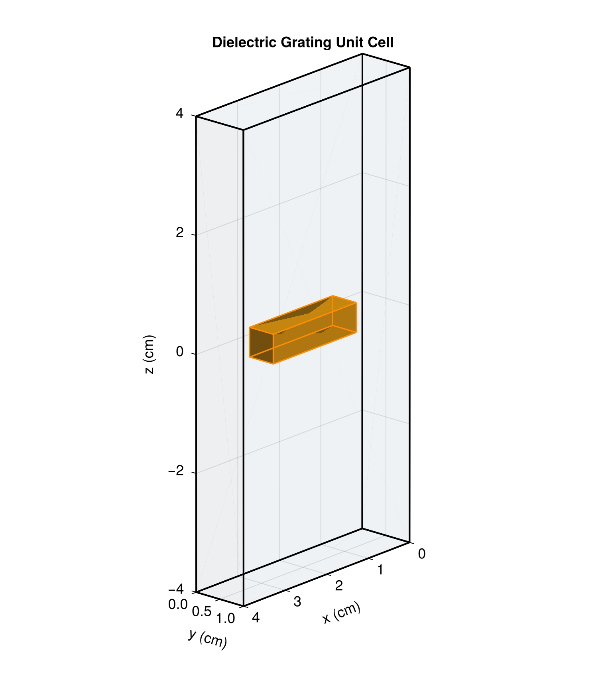
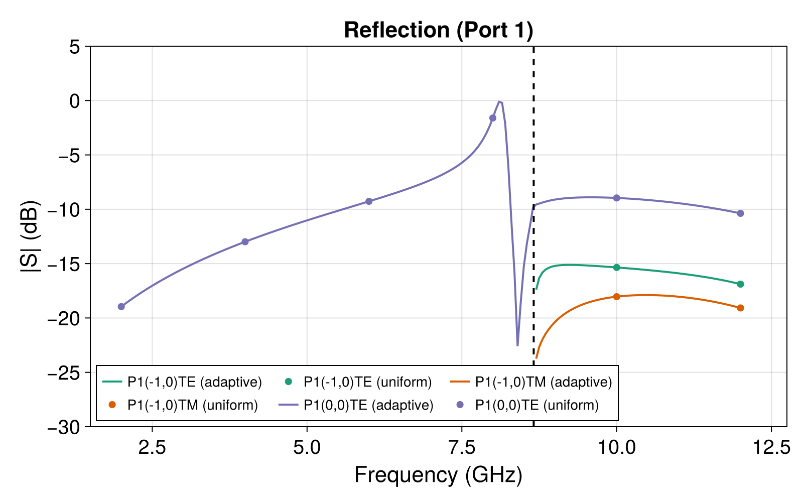
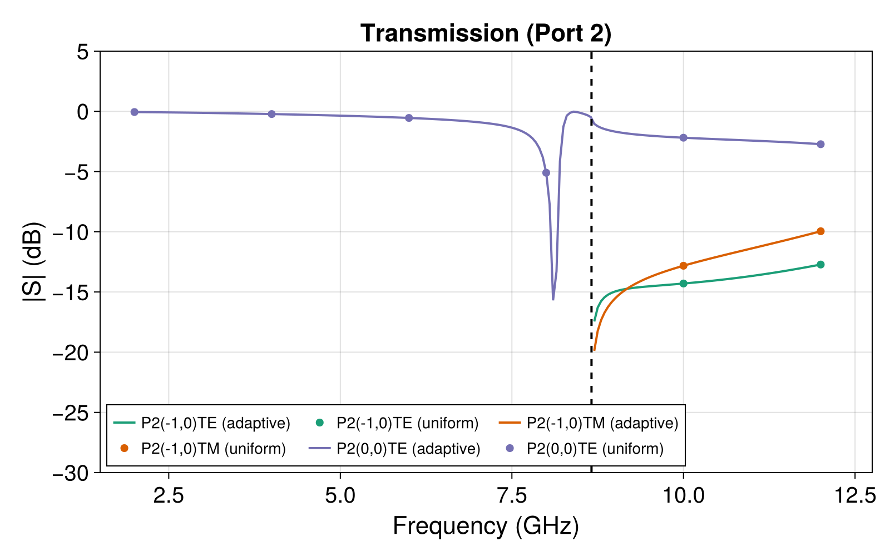
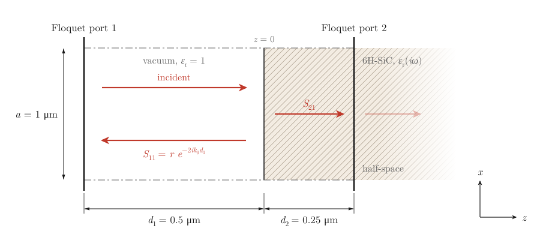
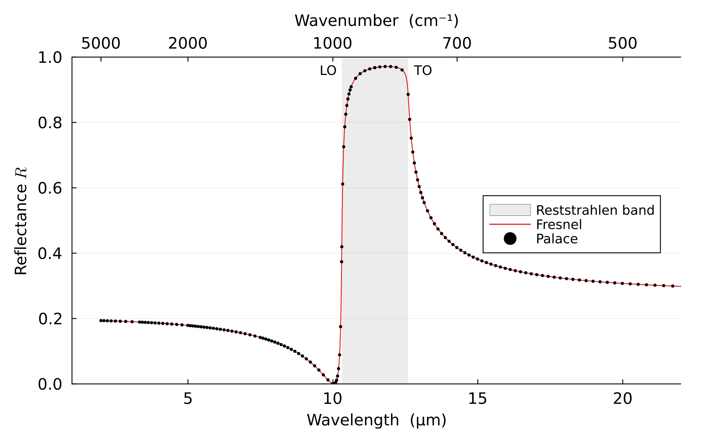
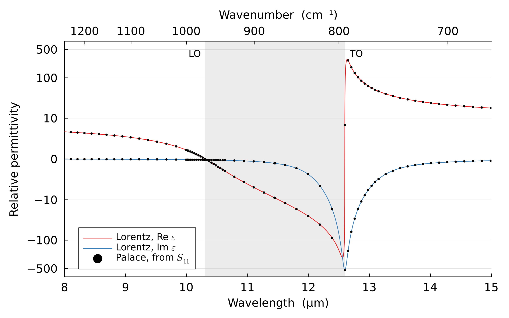

Floquet Ports for a Dielectric Grating
The files for this example can be found in the examples/dielectric_grating/ directory of the Palace source code.
This example demonstrates the use of Floquet port boundary conditions for computing diffraction efficiencies (S-parameters) of a 3D periodic dielectric grating. A TE-polarized plane wave is incident at 30° oblique incidence on a unit cell containing a dielectric bar, and the reflected and transmitted power in each diffraction order is computed over a frequency sweep.
The computational domain is a single unit cell of a doubly-periodic structure with periods $a = 4\text{ cm}$ in x and $b = 1\text{ cm}$ in y. The total domain height is $2L = 8\text{ cm}$ in z. A dielectric bar ($\varepsilon_r = 7$) of dimensions $2 \times 0.5 \times 0.5\text{ cm}$ is centered at the origin, surrounded by vacuum ($\varepsilon_r = 1$). Floquet port boundaries are placed at $z = \pm 4\text{ cm}$ and periodic boundary conditions with a Bloch phase shift are applied on the x and y faces. The Floquet wave vector $\bm{k}_F = (0, 1.0479, 0)\text{ cm}^{-1}$ at the reference frequency of $10\text{ GHz}$ corresponds to 30° oblique incidence, and scales linearly with frequency to maintain a constant incidence angle across the sweep.
The unit cell geometry is shown below. The translucent blue volume is vacuum ($\varepsilon_r = 1$), and the orange volume is the dielectric bar ($\varepsilon_r = 7$).

The domain is discretized with a structured hexahedral mesh generated by mesh/mesh.jl using Gmsh. A second-order finite element approximation ($p = 2$) is used for the solution. Two configuration files are provided:
dielectric_grating_uniform.json: Uniform sweep from 2 to 12 GHz with $\Delta f = 2.0\text{ GHz}$ (6 frequency points).dielectric_grating_adaptive.json: Adaptive fast frequency sweep from 2 to 12 GHz with initial step $\Delta f = 0.05\text{ GHz}$ and tolerance $10^{-3}$.
The S-parameter magnitudes from the uniform (markers) and adaptive (lines) sweeps are shown below:


The adaptive sweep captures the sharp spectral features with high fidelity while using only a modest number of frequency samples, and agrees well with the uniform sweep results.
Below the Rayleigh anomaly at 8.66 GHz (dashed line), only the specular (0,0)TE mode carries power — the grating behaves as a partially reflecting dielectric slab. Above 8.66 GHz, the first-order (±1,0) diffraction modes become propagating and appear as additional reflection and transmission channels. Near the Rayleigh anomaly, a sharp Fano resonance appears around 8.3 GHz: the incident wave couples to a leaky guided mode of the dielectric slab, producing a characteristic asymmetric lineshape with a sharp reflection peak and transmission dip.
Reststrahlen reflection of silicon carbide
Between the frequencies of its transverse (TO) and longitudinal (LO) optical phonons, a polar crystal reflects almost all of the infrared light that falls on it. Without damping, the permittivity is negative there, and the field in the crystal is evanescent [3]; with damping, the field is attenuated and a little of it is absorbed. This is the reststrahlen ("residual rays") band, which for silicon carbide extends from 10.3 to 12.6 μm. The configuration file sic_reststrahlen.json computes the reflectance of silicon carbide across the band, as measured and fitted by Spitzer, Kleinman and Walsh [1], with a frequency-dependent permittivity, Floquet ports, and an adaptive frequency sweep.
Spitzer et al. fitted the ordinary ray of 6H-SiC, with the electric field perpendicular to the $c$ axis, with one damped Lorentz oscillator,
\[\varepsilon_r(s) = \varepsilon_\infty + \frac{\Delta\varepsilon\,\omega_0^2}{s^2+\gamma s+\omega_0^2}, \qquad s=i\omega,\]
with $\varepsilon_\infty = 6.7$, $\Delta\varepsilon = 4\pi\rho = 3.305$, the TO frequency $\omega_0 = 2\pi\times 23.80\text{ THz}$ (12.60 μm, 794 cm⁻¹), and $\gamma = 0.006\,\omega_0$. In the Permittivity object of the silicon carbide these are "HighFrequency": 6.7, a Lorentz term with "DeltaPermittivity": 3.305, "ResonanceFrequency": 23800.0, and "DampingFrequency": 142.8, the last two in GHz. Without damping the permittivity vanishes at the LO frequency $\omega_L = \omega_0\sqrt{1+\Delta\varepsilon/\varepsilon_\infty}$, $2\pi\times 29.08\text{ THz}$ (10.31 μm, 970 cm⁻¹); the damping moves the zero of its real part by less than 0.01%. Near $\omega_0$, $|\varepsilon_r|$ reaches $\Delta\varepsilon\,\omega_0/\gamma \approx 550$, and just below it the wavelength in the crystal falls to 0.66 μm.
"L0": 1.0e-6 reads the mesh in micrometers, while the frequencies stay in GHz. Since Palace nondimensionalizes the problem, a model in micrometers at 25 THz is the same numerical problem as one in centimeters at 2.5 GHz. The mesh mesh/sic_halfspace.msh, generated by mesh/slab.jl, is a periodic unit cell of 1 μm × 1 μm with 3 × 3 hexahedra across, since at normal incidence the fields are uniform across the cell. Floquet port 1 lies in vacuum, 0.5 μm above the surface of the silicon carbide, and port 2 lies inside the silicon carbide, 0.25 μm below it. A Floquet port uses the permittivity of the medium it lies in, here $\varepsilon_r(i\omega)$ with its loss, so port 2 absorbs the transmitted wave as a semi-infinite crystal would, and the result is the reflectance of a half-space rather than of a film. Both ports keep only the specular order ("MaxOrder": 0). With third-order elements, 8 layers through each region resolve the wave in the vacuum at the shortest wavelength and in the crystal just below the resonance. The section of the unit cell below is to scale along the port normal:

The adaptive frequency sweep runs from 13.6 to 150 THz (22 to 2 μm) at "AdaptiveTol": 1.0e-8, with 149 output frequencies, finer across the two edges of the band. The reduced-order model evaluates the Lorentz permittivity at each frequency in closed form, and needs only 9 full solves for all 149 frequencies.
The reflection coefficient at the surface of a half-space at normal incidence is [2]
\[r = \frac{1 - n}{1 + n}, \qquad n = \sqrt{\varepsilon_r(i\omega)}, \qquad R = |r|^2,\]
and port 1 sees it with the phase of the vacuum in front of the surface, $S_{11} = r\,e^{-2ik_0 d_1}$ with $d_1 = 0.5\,\mu\text{m}$. The reflectance computed by Palace lies on this curve:

The axes are those of the oscillator fit of Spitzer et al. [1], as redrawn in the NSM Archive [4]. In the shaded band $R$ rises from 0.42 at LO to a maximum of 0.971 at 11.88 μm and is 0.886 at TO. Just above the LO frequency $\operatorname{Re}\varepsilon_r$ passes through 1, and $R$ almost vanishes. Far from the band $R$ approaches the values for $\varepsilon_\infty$ at short wavelengths, 0.196, and for the static permittivity $\varepsilon_\infty + \Delta\varepsilon = 10.0$ at long ones, 0.270. At a few wavelengths:
| Point | Wavelength (μm) | $R$, Palace | $R$, exact | Difference |
|---|---|---|---|---|
| Shortest | $1.999$ | $0.1936644551$ | $0.1936644556$ | $-5\times 10^{-10}$ |
| Minimum | $10.021$ | $0.0003416547$ | $0.0003416547$ | $-3\times 10^{-16}$ |
| LO | $10.308$ | $0.4195806737$ | $0.4195806737$ | $-3\times 10^{-14}$ |
| Band center | $11.452$ | $0.9677678378$ | $0.9677678378$ | $-4\times 10^{-15}$ |
| TO | $12.596$ | $0.8858853082$ | $0.8858853070$ | $+1\times 10^{-9}$ |
| Longest | $22.044$ | $0.2983037075$ | $0.2983037075$ | $-3\times 10^{-14}$ |
At all 149 frequencies, $S_{11}$ and the transmission $S_{21}$ into the crystal agree with the closed form to $1.0\times 10^{-9}$ and $2.6\times 10^{-9}$, and the cross-polarized TM outputs are below $1.3\times 10^{-11}$. The largest errors are at the shortest wavelength, from the vacuum layers, and at TO, from the layers in the crystal.
The reflection coefficient also gives back the permittivity, $n = (1 - r)/(1 + r)$. Below, it is compared with the Lorentz model on an axis which is linear around zero and logarithmic beyond. Across the band, from just above TO to just below LO, $\operatorname{Re}\varepsilon_r < 0$, and $\operatorname{Im}\varepsilon_r < 0$ is the loss in the sign convention of Palace. The largest relative difference is $2.4\times 10^{-8}$, at the TO frequency, where $|\varepsilon_r|$ is largest:

The script sic_reststrahlen.jl runs the sweep, prints the comparison and the table above, and renders both figures:
julia --project=examples -e 'include("examples/dielectric_grating/sic_reststrahlen.jl"); generate_reststrahlen_data()'References
[1] W. G. Spitzer, D. Kleinman and D. Walsh, Infrared properties of hexagonal silicon carbide, Physical Review 113 (1959) 127-132.
[2] M. Born and E. Wolf, Principles of Optics, 7th ed., Cambridge University Press, Cambridge, 1999.
[3] J. D. Caldwell, L. Lindsay, V. Giannini, I. Vurgaftman, T. L. Reinecke, S. A. Maier and O. J. Glembocki, Low-loss, infrared and terahertz nanophotonics using surface phonon polaritons, Nanophotonics 4 (2015) 44-68.
[4] NSM Archive, Physical properties of semiconductors: silicon carbide, optical properties, Ioffe Institute, http://www.ioffe.ru/SVA/NSM/Semicond/SiC/optic.html.